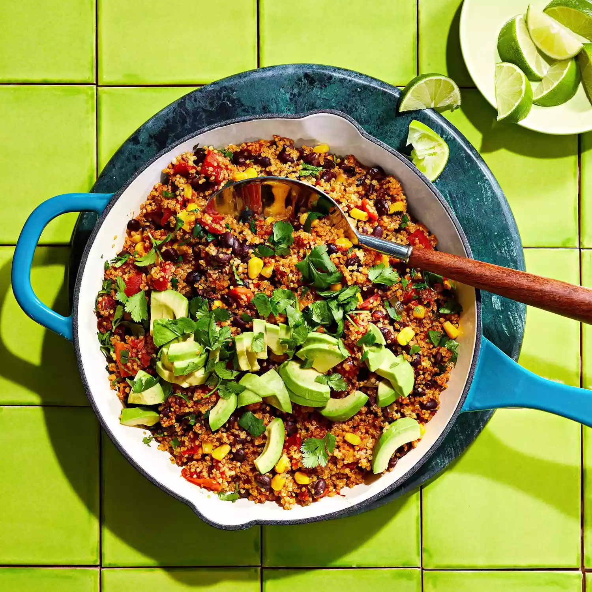

Mexican Quinoa

Description
This Mexican quinoa dish is one of those one-skillet recipes that's perfect for feeding a large family. And the kids love it! Serve it for Cinco de Mayo or any night of the week.
Ingredients
- 1 tablespoon olive oil
- 1 medium jalapeño pepper, chopped
- 2 cloves garlic, chopped
- 1 (15 ounce) can black beans, rinsed and drained
- 1 (14.5 ounce) can fire-roasted diced tomatoes
- 1 cup yellow corn
- 1 cup quinoa
- 1 cup chicken broth
- 1 tablespoon red pepper flakes, or to taste
- 1 ½ teaspoons chili powder
- ½ teaspoon ground cumin
- kosher salt and ground black pepper to taste
- 1 medium avocado - peeled, pitted, and diced
- 1 medium lime, juiced
- 2 tablespoons chopped fresh cilantro